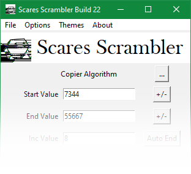
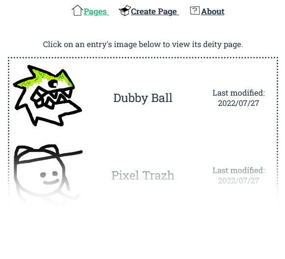
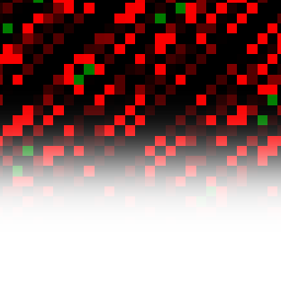
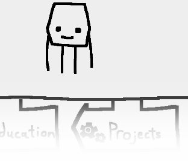

Scares Scrambler (2017-2020)

The Scares Scrambler is an open-source Python application which takes the data/code of any
file and "scrambles" it using various user-controlled algorithms. The program is intended for
creating experimental artwork of preexisting images, audio, game files, etc.
The Scares Scrambler was built as a replacement to the aging Vinesauce ROM Corrupter, another program with similar features. The app has since become the de facto cross-platform corrupting application by virtue of Python's portability (compared to bigger apps like the Real Time Corrupter, which are exclusive to Windows).
The Scares Scrambler was built as a replacement to the aging Vinesauce ROM Corrupter, another program with similar features. The app has since become the de facto cross-platform corrupting application by virtue of Python's portability (compared to bigger apps like the Real Time Corrupter, which are exclusive to Windows).
Pantheon Wiki (2022)

Pantheon Wiki is a Vue app for displaying fictional character data retrieved from a MongoDB
database using a NodeJS web server. The project was made for my Web-Centric Programming class,
where I learned all the relevant tools and languages in a few weeks. All the art and
writings on the site can easily be swapped for different data by changing the JSON data
hosted on the database.
The wiki supports full CRUD (create, retrieve, update, delete) functionality, with a simple page editor/creator built into the site. The NodeJS server also supports RESTful API calls, with a Postman collection included with the source code for easy testing with one's own data.
The wiki supports full CRUD (create, retrieve, update, delete) functionality, with a simple page editor/creator built into the site. The NodeJS server also supports RESTful API calls, with a Postman collection included with the source code for easy testing with one's own data.
LINCELLAUT and ORBITVIS (2022)

LINCELLAUT and ORBITVIS are two open-source programs created to explore the dynamics of
finite linear cellular automata (think Conway's Game of Life but with stricter rules).
LINCELLAUT is a collection of CLI tools written in C to automate various computations and searches. It includes an arbitrary integer precision unit, functions for dealing with matrices, vectors, and polynomials, and documentation.
ORBITVIS is a Pygame app used to visualise various orbits and data generated by LINCELLAUT. It features multiple different visualisation methods and makes use of LINCELLAUT's C codebase for fast renders.
LINCELLAUT is a collection of CLI tools written in C to automate various computations and searches. It includes an arbitrary integer precision unit, functions for dealing with matrices, vectors, and polynomials, and documentation.
ORBITVIS is a Pygame app used to visualise various orbits and data generated by LINCELLAUT. It features multiple different visualisation methods and makes use of LINCELLAUT's C codebase for fast renders.
INTERNETCONNECTIVITYPORTAL (2022)

This is the website you're currently on! This website was made with vanilla HTML, CSS, and JS,
using GitHub Pages as a web host. No templates or other services were used; everything on this
site was designed and programmed from scratch!
This site was created with responsive design in mind. Larger screens display a traditional horizontal navigation bar at the top of each page, while smaller screens utilise a mobile-friendly sidebar.
This site was created with responsive design in mind. Larger screens display a traditional horizontal navigation bar at the top of each page, while smaller screens utilise a mobile-friendly sidebar.